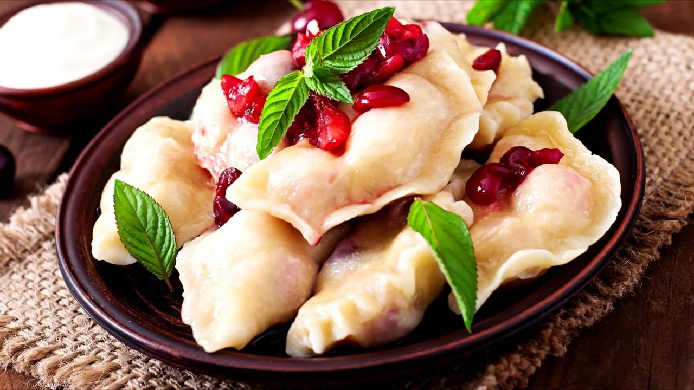

Varenyky

Ukrainian dumplings. Fillings come in all types: berries, meat or vegetables.
Ingredients:
- All-purpose flour – To make the dough; you’ll need extra flour for dusting the dumplings later.
- Warm water – Warm, but not hot water; should have a temperature around 100 degrees Fahrenheit.
- Salt – For the dough and the filling.
- Black Pepper – Add more or less to taste.
- Potatoes – You need large potatoes.
- Onion – A yellow onion works well, but you can also use red onions if preferred.
- Butter – To fry the onions. If you don’t want to use butter, you can also use oil – but the butter gives them a nice flavor.
Steps:
- Start by pouring warm – not boiling – water (it should be around 100 degrees Fahrenheit) into a deep bowl. Then add the flour and salt.
- Knead the dough first with a spoon and then with your hands until you get a soft elastic dough that is a little sticky when touching it. Alternatively, you can also use a stand mixer.
- While the dough is resting, cut the peeled potatoes into small cubes and put them in a saucepan. Add water and salt and boil the potatoes until soft. Then drain all the water.
- In a frying pan, fry the chopped onion in butter until golden brown, stirring occasionally. This will take around 5-6 minutes.
- Mash the boiled potatoes with a potato masher or a fork. Then add the fried onions, salt and black pepper.
- Form the varenyky. Working with 1 circle of dough at a time, place a heaping teaspoon of the filling into the center. Gather the dough into a half-moon shape around the filling and pinch the top closed, then pinch both edges closed. Place the shaped varenik on a well-floured baking sheet or cutting board, and continue filling the rest. Make sure the varenyky are not touching – otherwise, they’ll stick together.
- Boil the varenyky. Bring a large pot of water to a boil and salt it generously. Boil the varenyky in batches – 6 to 10 at a time, depending on the size of your pot. Cook them for 2 to 3 minutes – they are done when they’ve floated to the surface, the water has returned to a simmer, and they’ve simmered for about 1 minute. Do not overcook, as the filling may escape the dough.